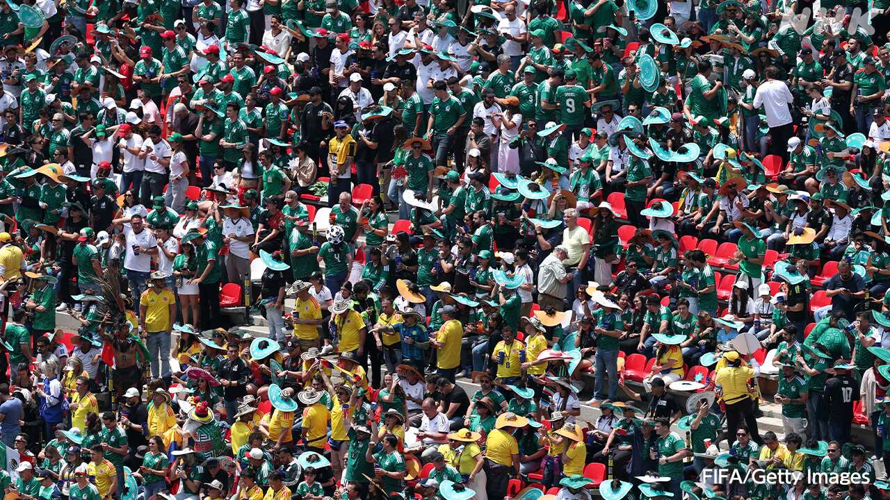

最新ニュース
1️⃣ 日本のH3ロケット 打ち上げが成功
日本のH3ロケットの打ち上げが成功しました。
JAXAは12日、H3ロケットを鹿児島県の種子島から打ち上げました。そのあと、ロケットは6つの人工衛星を軌道に入れました。
H3ロケットは、去年12月にも打ち上げましたが、失敗しました。
JAXAは、失敗の原因になった所を直して、12日、打ち上げました。
JAXAのトップは「失敗したあと、原因をしっかり調べました。日本のロケットが、世界で信頼されるように、これからも頑張っていきます」と話しています。
2️⃣ 「首都直下地震」 被害を小さくする目標を決めた
政府が、地震の被害を小さくする目標を決めました。
東京やその周りでは、とても大きな地震が起こる可能性があります。この地震は「首都直下地震」と呼ばれています。
この地震が起こると、1万8000人ぐらいが亡くなるかもしれないと考えられています。40万ぐらいの家や建物が壊れたり、火事で燃えたりするかもしれません。
政府は12日、被害を半分以下にすることを目標にすると決めました。そして、2035年度までに何をするか決めました。
特に、火事の被害を少なくしたいと考えています。大きい地震のときに、自動で電気を止めるブレーカーを増やします。東京やその周りでは、ほとんどの建物につける計画です。
3️⃣ 外国人が運転する車の事故が増えている
外国人が運転する車の事故が、増えています。
国によると、日本の運転免許を持っている外国人は、去年133万人ぐらいでした。10年前の1.6倍に増えました。
外国人が運転する車の事故は、去年7906件ありました。5年続けて増えています。
国は、日本に住む外国人や外国から旅行に来る人がもっと増えると考えています。このため、事故が起こらないように、交通のルールをしっかり伝えることなどが必要だと考えています。
そして、外国の運転免許を日本の免許にかえるときは、日本の住所をしっかりチェックすると言っています。
4️⃣ サッカーのワールドカップが始まった

サッカーのワールドカップが、始まりました。
アメリカとカナダ、メキシコの3つの国で行います。最初の試合はメキシコで行いました。
メキシコと南アフリカが試合をしました。メキシコが2点を取って勝ちました。
この大会の初めてのゴールを決めたメキシコのキニョネス選手は、「すばらしいスタジアムで、たくさんのファンの前で決めることができてうれしいです」と話していました。
日本は、アメリカのダラスで、日本の時間で15日にオランダと試合をします。
- 〜から
- 〜後 / 〜あと
- 〜になる
- 〜ところ
- 〜ている / 〜でいる
- 〜ように
- 〜ても / 〜でも
- 〜がある / 〜がいる
- 〜くらい / 〜ぐらい
- 〜かもしれない / 〜かもしれません
- 〜たり〜たりする
- 〜こと
- 〜までに
- 〜まで
- 〜によると
- 〜など
- 〜ため
- 〜らしい
- 〜ことができる
vebaev.github.io
Generated: 2026-06-12 12:26:12 UTC